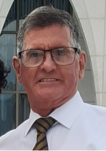

Gelson Nascimento Dias | WDD 130

Olá! Meu nome é Gelson N. Dias e sou de Goiânia - GO. Eu gosto de filmes épicos e de leitura, gosto de viajar com a família, já sou aposentado, mas continuo aprendendo. Gosto muito de informática, por isso sou estudante de Programação de Sistema Web na BYU-Idaho.